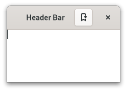

Gtk.HeaderBar¶
Example¶

- Subclasses:
None
Methods¶
- Inherited:
Gtk.Widget (183), GObject.Object (37), Gtk.Accessible (17), Gtk.Buildable (1)
- Structs:
class |
|
|
|
|
|
|
|
|
|
|
|
|
|
|
Virtual Methods¶
- Inherited:
Gtk.Widget (25), GObject.Object (7), Gtk.Accessible (6), Gtk.Buildable (9)
Properties¶
- Inherited:
Name |
Type |
Flags |
Short Description |
|---|---|---|---|
r/w |
|||
r/w/en |
|||
r/w/en |
|||
r/w/en |
Signals¶
- Inherited:
Fields¶
- Inherited:
Class Details¶
- class Gtk.HeaderBar(**kwargs)¶
- Bases:
- Abstract:
No
Creates a custom titlebar for a window.
<picture> <source srcset=”headerbar-dark.png” media=”(prefers-color-scheme: dark)”> <img alt=”An example
Gtk.HeaderBar" src=”headerbar.png”> </picture>GtkHeaderBaris similar to a horizontalGtkCenterBox. It allows children to be placed at the start or the end. In addition, it allows the window title to be displayed. The title will be centered with respect to the width of the box, even if the children at either side take up different amounts of space.GtkHeaderBarcan add typical window frame controls, such as minimize, maximize and close buttons, or the window icon.For these reasons,
GtkHeaderBaris the natural choice for use as the custom titlebar widget of aGtkWindow(see [method`Gtk`.Window.set_titlebar]), as it gives features typical of titlebars while allowing the addition of child widgets.The
GtkHeaderBarimplementation of theGtkBuildableinterface supports adding children at the start or end sides by specifying “start” or “end” as the “type” attribute of a<child>element, or setting the title widget by specifying “title” value.By default the
GtkHeaderBaruses aGtkLabeldisplaying the title of the window it is contained in as the title widget, equivalent to the following UI definition:``xml <object class=”GtkHeaderBar”>
- <property name=”title-widget”>
- <object class=”GtkLabel”>
<property name=”label” translatable=”yes”>Label</property> <property name=”single-line-mode”>True</property> <property name=”ellipsize”>end</property> <property name=”width-chars”>5</property> <style>
<class name=”title”/>
</style>
</object>
</property>
</object> ``
- CSS nodes
`` headerbar ╰── windowhandle
- ╰── box
├── box.start │ ├── windowcontrols.start │ ╰── [other children] ├── [Title Widget] ╰── box.end
├── [other children] ╰── windowcontrols.end
A
GtkHeaderBar’s CSS node is calledheaderbar. It contains awindowhandlesubnode, which contains aboxsubnode, which contains twoboxsubnodes at the start and end of the header bar, as well as a center node that represents the title.Each of the boxes contains a
windowcontrolssubnode, see [class`Gtk`.WindowControls] for details, as well as other children.- Accessibility
GtkHeaderBaruses the [enum`Gtk`.AccessibleRole.group] role.- classmethod new()[source]¶
- Returns:
a new
GtkHeaderBar- Return type:
Creates a new
GtkHeaderBarwidget.
- get_show_title_buttons()[source]¶
- Returns:
true if title buttons are shown
- Return type:
Returns whether this header bar shows the standard window title buttons.
- get_title_widget()[source]¶
- Returns:
the title widget
- Return type:
Gtk.WidgetorNone
Retrieves the title widget of the header bar.
See [method`Gtk`.HeaderBar.set_title_widget].
- get_use_native_controls()[source]¶
- Returns:
true if native window controls are shown
- Return type:
Returns whether this header bar shows platform native window controls.
New in version 4.18.
- pack_end(child)[source]¶
- Parameters:
child (
Gtk.Widget) – the widget to be added to self
Adds a child to the header bar, packed with reference to the end.
- pack_start(child)[source]¶
- Parameters:
child (
Gtk.Widget) – the widget to be added to self
Adds a child to the header bar, packed with reference to the start.
- remove(child)[source]¶
- Parameters:
child (
Gtk.Widget) – the child to remove
Removes a child from the header bar.
The child must have been added with [method`Gtk`.HeaderBar.pack_start], [method`Gtk`.HeaderBar.pack_end] or [method`Gtk`.HeaderBar.set_title_widget].
- set_decoration_layout(layout)[source]¶
-
Sets the decoration layout for this header bar.
This property overrides the [property`Gtk`.Settings:gtk-decoration-layout] setting.
There can be valid reasons for overriding the setting, such as a header bar design that does not allow for buttons to take room on the right, or only offers room for a single close button. Split header bars are another example for overriding the setting.
The format of the string is button names, separated by commas. A colon separates the buttons that should appear on the left from those on the right. Recognized button names are minimize, maximize, close and icon (the window icon).
For example, “icon:minimize,maximize,close” specifies an icon on the left, and minimize, maximize and close buttons on the right.
- set_show_title_buttons(setting)[source]¶
- Parameters:
setting (
bool) – true to show standard title buttons
Sets whether this header bar shows the standard window title buttons.
- set_title_widget(title_widget)[source]¶
- Parameters:
title_widget (
Gtk.WidgetorNone) – a widget to use for a title
Sets the title for the header bar.
When set to
NULL, the headerbar will display the title of the window it is contained in.The title should help a user identify the current view. To achieve the same style as the builtin title, use the “title” style class.
You should set the title widget to
NULL, for the window title label to be visible again.
- set_use_native_controls(setting)[source]¶
- Parameters:
setting (
bool) – true to show native window controls
Sets whether this header bar shows native window controls.
This option shows the “stoplight” buttons on macOS. For Linux, this option has no effect.
See also Using GTK on Apple macOS.
New in version 4.18.
Property Details¶
- Gtk.HeaderBar.props.decoration_layout¶
-
The decoration layout for buttons.
If this property is not set, the [property`Gtk`.Settings:gtk-decoration-layout] setting is used.
- Gtk.HeaderBar.props.show_title_buttons¶
- Name:
show-title-buttons- Type:
- Default Value:
- Flags:
Whether to show title buttons like close, minimize, maximize.
Which buttons are actually shown and where is determined by the [property`Gtk`.HeaderBar:decoration-layout] property, and by the state of the window (e.g. a close button will not be shown if the window can’t be closed).
- Gtk.HeaderBar.props.title_widget¶
- Name:
title-widget- Type:
- Default Value:
- Flags:
The title widget to display.
- Gtk.HeaderBar.props.use_native_controls¶
- Name:
use-native-controls- Type:
- Default Value:
- Flags:
Whether to show platform native close/minimize/maximize buttons.
For macOS, the [property`Gtk`.HeaderBar:decoration-layout] property can be used to enable/disable controls.
On Linux, this option has no effect.
See also Using GTK on Apple macOS.
New in version 4.18.